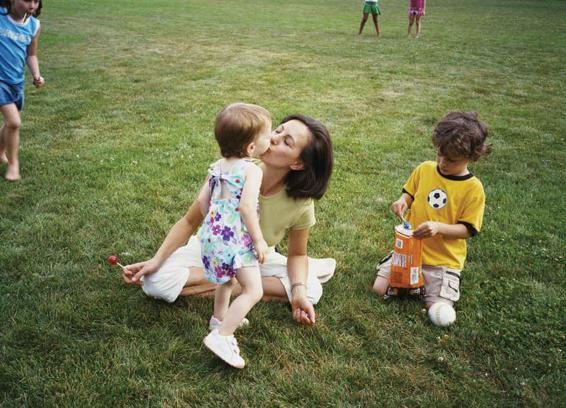

Although many writers have used Freud’s approach in studying gender development, they have modified it in major respects. An important example is the sociologist Nancy Chodorow (1978, 1988), who argues that learning to feel male or female derives from the infant’s attachment to the parents from an early age. Children become emotionally involved with the mother because she is the most dominant influence in their early lives. At some point, this attachment has to be broken for the child to achieve a separate sense of self—to become less closely dependent.
Nancy Chodorow argues that boys are socialized to be less attached to, or dependent on, their parents at an earlier age than girls.
Chodorow argues that the breaking process occurs in a different way for boys and girls. Girls remain closer to the mother—able, for example, to go on hugging and kissing her and imitating what she does. Because there is no sharp break from the mother, the girl, and later the adult woman, develops a sense of self that is more continuous with other people. Her identity is more likely to be merged with or depend on another’s: first her mother’s, later a man’s. In Chodorow’s view, this process of development fosters sensitivity and emotional compassion in women.
Boys gain a sense of self via a more radical rejection of their original closeness to the mother, forging their understanding of masculinity from what is not feminine. They learn not to be “sissies” or “mama’s boys.” As a result, boys are relatively unskilled in relating closely to others; they develop more analytical ways of looking at the world. They take a more active view of their lives, emphasizing achievement, but they have repressed their ability to understand their own feelings and those of others.
Chodorow’s work has met with various criticisms. Janet Sayers (1986), for example, has suggested that Chodorow does not explain the struggle of women, particularly in current times, to become autonomous, independent beings. Women (and men), Sayers points out, are more contradictory in their psychological makeup than Chodorow’s theory suggests. Femininity may conceal feelings of aggressiveness or assertiveness, which are revealed only obliquely or in certain contexts (Brennan, 1988). Chodorow has also been criticized for her narrow conception of the family based on a White, middle-class model. What happens, for example, in one-parent households or, as in many Chicano communities, in families where children are cared for by more than one adult (Segura and Pierce, 1993)?
These criticisms don’t undermine Chodorow’s work, however. Her ideas remain important because they teach us a good deal about the nature of femininity and help us understand the origins of “male inexpressiveness”—the difficulty men have in revealing their feelings to others (Balswick, 1983).
Table 4.1APPLYING SOCIOLOGY TO SOCIALIZATION AND THE LIFE COURSE
THEORY
APPROACH TO UNDERSTANDING SOCIALIZATION
CONTEMPORARY APPLICATION
G. H. Mead theory of self
Children learn to adopt the perspectives of others, and thus become self-aware.
A child may feel proud when a parent praises them. By adopting the parent’s perspective, they become aware of their own good behavior.
Cooley’s looking glass self
Our self-concept is based on our perceptions of how others see us.
A college student feels accepted and popular when they receive lots of “likes” on their Instagram photo.
Piaget’s cognitive development model
As children mature, they gradually acquire skills and capacities in reasoning, with the final stage encompassing abstract reasoning.
Young teens may gravitate to poetry and symbolic song lyrics because they have the capacity to understand abstractions.
Psychoanalytic perspectives
Freud and Chodorow believe that gender identity develops out of one’s attachment to and separation from parents.
Cisgender girls may mimic the clothing and personal style of their mothers, whereas cisgender boys mimic their fathers.
Gilligan’s moral development theory
Men and women use different moral criteria in their decision-making, due to early socialization processes.
Men and women on a jury may react very differently to a defendant, as they may apply different values when assessing the motive and behavior.